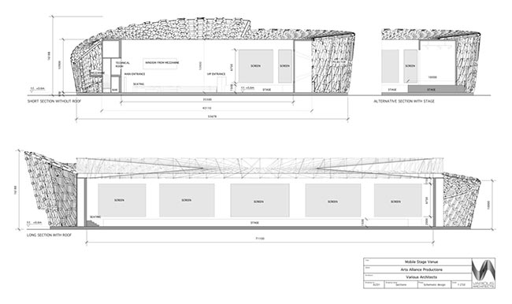

transitional-sections
what and why?
I consider this control a tabless, tabbed control. While it maintains the functionality of a tabset it appears and behaves in a slightly more aesthetic way. This control was created out of a requirement for a current project I am working on that needed the functionality of tabs but not the look. I am an avid user of Microsoft's Zune service as well as a Windows Phone and Zune owner. I wanted to replicate the slide-in effect that is prevalent throughout the user interface on these devices.
basic functionality | horizontal / vertical
- ar·chi·tec·ture /ˈärkiˌtekCHər/
noun
1. the art or practice of designing and constructing buildings. synonyms: building design, building style, planning, building, construction; the style in which a building is designed or constructed, esp. with regard to a specific period, place, or culture. plural noun: architectures "Victorian architecture"
2. the complex or carefully designed structure of something. "the chemical architecture of the human brain" the conceptual structure and logical organization of a computer or computer-based system."a client/server architecture"
- 
-
Give it a shot, let me know what you think. Wanna improve it? Make a fork. ;)
html source
<div class="transSections" id="demo">
<div class="sectionItemsContainer">
<a class="sectionItem" id="parent1" href="#item1">Section 1</a>
<a class="sectionItem" id="parent2" href="#item2">Section 2</a>
<a class="sectionItem" id="parent3" href="#item3">Section 3</a>
<a class="sectionItem" id="parent4" href="#item4">Section 4</a>
</div> <div class="sectionContentContainer"> <div class="sectionPanel"> <ul class="sectionContent" id="item1"> <li> <!-- Content Here --> </li> </ul> <ul class="sectionContent" id="item2"> <li> <!-- Content Here --> </li> </ul> <ul class="sectionContent" id="item3"> <li> <!-- Content Here --> </li> </ul> <ul class="sectionContent" id="item4"> <li> <!-- Content Here --> </li> </ul> </div> </div> </div> <script> $(function () { $('#demohorz').TransSections({ width: "650", height: "375", orientation: "horz" }); }); </script>
desired future features
I would like to extend the functionality to include AJAX loading of sections as well as allow for different transition directions.